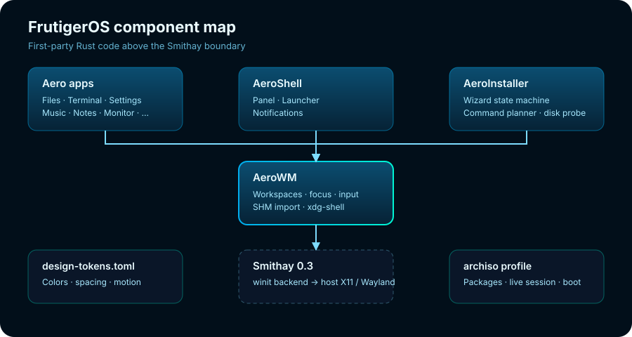

Architecture
FrutigerOS is a collection of small Rust programs with explicit boundaries rather than a single monolith.

Repository boundaries
There is no root Cargo workspace. This is deliberate: each component can be versioned, packaged and tested independently.
| Path | Type | Role |
|---|---|---|
aerowm/ | Binary crate | Wayland compositor |
aeroshell/ | Binary crate | Panel, launcher, notifications |
aero-installer/ | Binary crate | Installation wizard and command planner |
aero-apps/ | Workspace, 9 members | Native applications |
frutigeros-iso/ | archiso profile | Live medium and boot configuration |
frutigeros-docs/ | Static site | This documentation |
frutigeros-website/ | Static site | Project landing page |
design-tokens.toml | Data | Shared palette, typography, spacing, motion |
Compositor boundary
AeroWM is the only component that speaks the Wayland server protocol. It owns the socket and the display. Everything else is a client. This keeps privilege and protocol complexity in one place.
client (AeroShell, AeroFiles, …)
│ wl_compositor / wl_shm / xdg_wm_base
▼
AeroWM ──► Smithay 0.3 ──► winit (host window)
│
└── workspace, focus, input, panel policyNo compositor IPC yet
The panel knows the active workspace only because the layout engine is passed a number; there is no channel from AeroWM. The planned fix is a small private protocol (or a Unix socket message bus) carrying workspace changes, focused app id and panel geometry. Until then the panel renders workspace 0 as active.
Design tokens
design-tokens.toml is the single source of truth for the palette and
spacing. The website, docs and shell currently duplicate the values in CSS/constants;
AeroWM parses its own TOML config. A future generator can emit CSS variables and Rust
constants from the same file to prevent drift.
Packaging plan
- Build release binaries for AeroWM, AeroShell and AeroInstaller.
- Package them with
PKGBUILDfiles and install desktop entries/icons. - Publish packages to a signed local repository.
- Enable that repository in
frutigeros-iso/pacman.conf. - Build and boot-test the ISO in QEMU, then on real hardware.